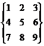

GeoGebra also supports matrices, which are represented as a list of lists that contain the rows of the matrix.
Example: In GeoGebra, {{1, 2, 3}, {4, 5, 6}, {7, 8, 9}} represents the matrix .
Addition and subtraction examples:
· Matrix1 + Matrix2: Adds the corresponding elements of two compatible matrices.
· Matrix1 – Matrix2: Subtracts the corresponding elements of two compatible matrices.
Multiplication examples:
· Matrix * Number: Multiplies every element of the matrix by the given number.
·
Matrix1
* Matrix2: Uses matrix multiplication to calculate the resulting
matrix.
Note: The rows of the first and columns of
the second matrix need to have the same number of elements.
Example: {{1, 2}, {3, 4}, {5, 6}} * {{1, 2, 3}, {4,
5, 6}} gives you the matrix {{9,
12, 15}, {19, 26, 33}, {29, 40, 51}}.
·
2x2
Matrix * Point (or Vector): Multiplies the
matrix with the given point/vector and gives you a point as a result.
Example: {{1, 2}, {3, 4}} * (3, 4)
gives you the point A = (11, 25).
·
3x3
Matrix * Point (or Vector): Multiplies the
matrix with the given point/vector and gives you a point as a result.
Example: {{1, 2, 3}, {4, 5, 6}, {0, 0, 1}} * (1,
2) gives you the point A = (8,
20).
Note: This is a special case for affine
transformations where homogenous coordinates are used: (x, y, 1) for a point
and (x, y, 0) for a vector. This example is therefore equivalent to:
{{1, 2,
3}, {4, 5, 6}, {0, 0, 1}} * {1, 2, 1}.
Other examples (see also section Matrix Commands):
· Determinant[Matrix]: Calculates the determinant for the given matrix.
· Invert[Matrix]: Inverts the given matrix
· Transpose[Matrix]: Transposes the given matrix